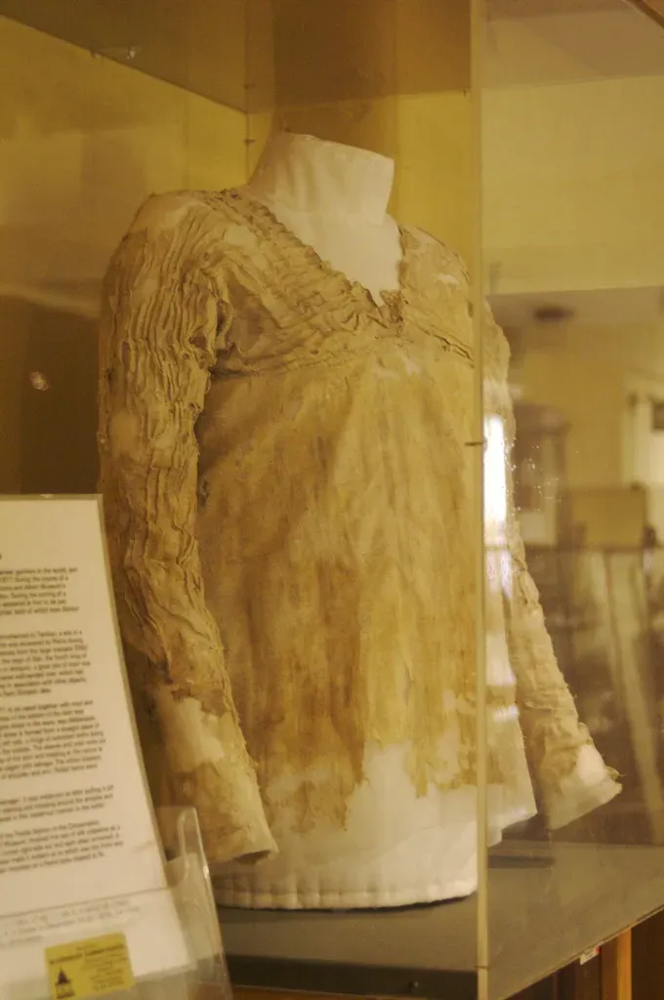

The Tarkhan Dress: বিশ্বের প্রাচীনতম বোনা পোশাক
5,000 বছরের পুরোনো একটি লিনেন শার্ট 64 বছর ধরে ন্যাকড়ার স্তূপে অলক্ষিত পড়ে ছিল।

এটি একটি ছোট, ফ্যাকাশে লিনেন শার্ট, যার V-আকৃতির গলা আর সূক্ষ্মভাবে কুঁচি দেওয়া হাতা। এটি সহজ, প্রায় আধুনিক দেখায়। তবু বিজ্ঞানীরা এর তারিখ দিয়েছেন পাঁচ হাজার বছরেরও বেশি আগে, যা The Tarkhan Dress-কে বিশ্বের যেকোনো জায়গায় জানা প্রাচীনতম বোনা পোশাক করে তোলে। আরও বিস্ময়কর: কয়েক দশক ধরে কেউ জানত না এটির অস্তিত্ব আছে, যদিও এটি ইতিমধ্যেই খুঁড়ে তোলা হয়েছিল।
The Tarkhan Dress কী?
The Tarkhan Dress হলো হাতে-বোনা কাপড়ের তিনটি টুকরো দিয়ে তৈরি একটি লিনেন টপ, যাতে হালকা ধূসর ডোরা আছে। বডিস আর হাতা knife-pleated, আর গলার রেখা V আকারে কাটা। নিচের প্রান্ত, বা hem, হারিয়ে গেছে, তাই আমরা জানি না এটি একসময় কত লম্বা ছিল।
আজ এটি University College London (UCL)-এর Petrie Museum of Egyptian Archaeology-র অন্তর্গত। এটি কেবল একটি শরীরের চারপাশে মোড়ানো পুরোনো কাপড় নয়। এটি কাটা, মাপমতো তৈরি করা আর সেলাই করা একটি পোশাক, যে কারণে বিশেষজ্ঞরা এটিকে তৈরি করা বোনা পোশাকের প্রাচীনতম টিকে থাকা উদাহরণ বলে অভিহিত করেন।
কীভাবে এটি পাওয়া গেল
1912 আর 1913 সালে ব্রিটিশ প্রত্নতত্ত্ববিদ Flinders Petrie Cairo-র প্রায় 50 কিলোমিটার দক্ষিণে Tarkhan-এ একটি বড় প্রাচীন কবরস্থান খনন করেন। সমাধিগুলোর একটি, mastaba 2050 নামে পরিচিত একটি কাদা-ইটের কাঠামো, অনেক আগেই লুট হয়ে গিয়েছিল। যা অবশিষ্ট ছিল তার মধ্যে ছিল পুরোনো লিনেন কাপড়ের একটি বড় স্তূপ।
লিনেনটি London-এ পাঠানো হয় আর সরিয়ে রাখা হয়। ষাট বছরেরও বেশি সময় ধরে কেউ এটি ভালো করে দেখেনি। তারপর, 1977 সালে, গুচ্ছটি পরিষ্কার আর সংরক্ষণের জন্য Victoria and Albert Museum-এ যায়। বিভিন্ন বস্ত্রের অনেক টুকরো বাছাই করার সময় সংরক্ষকেরা বুঝতে পারেন যে সেগুলোর একটি মোটেও ন্যাকড়া নয়। এটি ছিল একটি সম্পূর্ণ ওপরের পোশাক, যার কুঁচিগুলো এখনো দৃশ্যমান।
দলটি সাবধানে এটি পরিষ্কার করে এবং একটি সূক্ষ্ম, স্বচ্ছ রেশমি সাপোর্টে সেলাই করে দেয় যাতে এটি নিরাপদে প্রদর্শন করা যায়। “funerary rags”-এর একটি বিস্মৃত গুচ্ছ থেকে শার্টটি হঠাৎ বিশ্বের সবচেয়ে গুরুত্বপূর্ণ বস্ত্রগুলোর একটিতে পরিণত হয়।
এটি আসলে কত পুরোনো?
যেহেতু সমাধিটি প্রাচীনকালে লুট হয়েছিল, পোশাকটির সঠিক বয়স নিয়ে বছরের পর বছর বিতর্ক ছিল। এর সঙ্গে পাওয়া লিনেন 1980-এর দশকে পরীক্ষা করা হয়েছিল, কিন্তু পোশাকটি নিজেই এত মূল্যবান ছিল যে তা থেকে বড় একটি নমুনা কাটা যায়নি।
2015 সালে, Petrie Museum-এর শতবর্ষের অংশ হিসেবে, জাদুঘরের curator University of Oxford-এর radiocarbon unit-এর সঙ্গে কাজ করেন। তারা মাত্র 2.24 মিলিগ্রাম ওজনের একটি ক্ষুদ্র সুতো সরিয়ে নেন। লিনেন radiocarbon dating-এর জন্য ভালো, কারণ flax উদ্ভিদ অল্প সময়ে জন্মায় আর মরে। ফলাফল পোশাকটিকে 3482 থেকে 3102 খ্রিস্টপূর্বের মধ্যে রাখে, 95% সম্ভাবনা সহ।
তার মানে শার্টটি Egypt-এর First Dynasty-র চেয়েও পুরোনো হতে পারে, আর এটি Giza-র Great Pyramid-এর চেয়ে শতাব্দীর পর শতাব্দী পুরোনো, যা তৈরি হয়েছিল প্রায় 2560 খ্রিস্টপূর্বে।
এটি কি সত্যিই পরা হয়েছিল?
পোশাকটি অধ্যয়ন করা বিশেষজ্ঞরা কনুই আর বগলের চারপাশে ভাঁজ লক্ষ করেন, সেই ধরনের ভাঁজ যা পোশাক পরলে তৈরি হয়। তা থেকে বোঝা যায় এটি জীবদ্দশায় ব্যবহৃত হয়েছিল, কেবল সমাধির জন্য তৈরি করা হয়নি। এর ছোট আকার থেকে বোঝা যায় এটি হয়তো একজন ছিপছিপে তরুণী বা একজন কিশোরীর ছিল, যদিও আমরা ঠিক জানতে পারি না কে এটি পরেছিল।
যা আমরা এখনো জানি না
আমরা মালিকের নাম জানি না, পোশাকটি মূলত কত লম্বা ছিল, বা এটি দৈনন্দিন পোশাক ছিল নাকি বিশেষ কিছু। যেহেতু সমাধিটি বিঘ্নিত হয়েছিল, পোশাকটি তার মূল সমাধির বাইরে পাওয়া যায়। আমাদের প্রতিটি উত্তর কাপড়টি থেকেই আসে।
যা আমরা জানি তা যথেষ্টই উল্লেখযোগ্য: পাঁচ হাজার বছরেরও বেশি আগে মিশরে কেউ লিনেন বুনেছিল, আকারমতো কেটেছিল, হাতে কুঁচি দিয়েছিল, আর পরেছিল। তাদের শার্টটি টিকে গেল যখন তাদের বিশ্বের প্রায় সবকিছুই টেকেনি।
সংক্ষিপ্ত তথ্য
- তারিখ: 3482–3102 খ্রিস্টপূর্ব (radiocarbon, 95% সম্ভাবনা)
- উপাদান: হাতে-বোনা লিনেন, তিনটি টুকরো, knife-pleated
- পাওয়া গেছে: 1913 সালে Flinders Petrie কর্তৃক Tarkhan-এ, Cairo-র ~50 km দক্ষিণে
- পোশাক হিসেবে শনাক্ত: 1977 সালে, V&A-তে সংরক্ষণের সময়
- এখন রাখা আছে: Petrie Museum of Egyptian Archaeology, UCL, London
ছোট ভিডিওটি দেখুন
এই গল্পের ছোট ভিডিওটি শীঘ্রই আমাদের Facebook পৃষ্ঠায় আসছে।
সূত্র
- UCL News — UCL Petrie Museum’s Tarkhan Dress: world’s oldest woven garment (2016)
- Stevenson & Dee — Confirmation of the world’s oldest woven garment: the Tarkhan Dress, Antiquity Project Gallery
- Archaeology Magazine — Dressing for the Ages (May/June 2016)
ছবি: আসল বস্তুর ছবিগুলো তাদের লাইসেন্সসহ কৃতিত্ব দেওয়া হয়েছে। কোনো কল্পিত দৃশ্যকে “AI reconstruction” হিসেবে চিহ্নিত করা হয়েছে। এই নিবন্ধের প্রধান ছবিটি পোশাকটি-এর একটি আসল আলোকচিত্র।